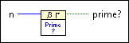
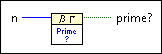

Check Prime VI
Owning Palette: Discrete Math VIs
Requires: Full Development System
Checks whether a number is a prime number.

 Add to the block diagram Add to the block diagram |
 Find on the palette Find on the palette |
Owning Palette: Discrete Math VIs
Requires: Full Development System
Checks whether a number is a prime number.

| Add to the block diagram |
Find on the palette |